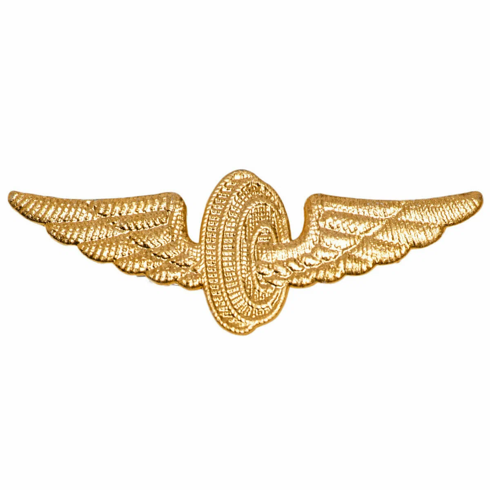

Создание платформы RPA. Помимо разновекторных текущих задач, по эскизам на Figma мною был разработан Player для запуска роботов.
Senior System Architect
c#, wpf, prismlibrary, rabbitmq, protobuf, telerik, excel/word interop and much more, jira, gitlab, confluence
Центр Желдорконтроль ОАО РЖД
2001-2019
Создание продукта для учёта и анализа нарушений, выявленных внутренним финансовым контролем ОАО РЖД
Leading Specialist
c#, sql, wcf, asp net, wpf, entity framework, prism library, net office, sqlite, active directory

СКЖД
1990-2000
Создал много успешных продуктов для железной жороги.
Например, учёт и выписка дефектных ведомостей деповского ремонта грузовых вагонов, анализ работ и материалов.
Автоматизация сводной отчётности дороги, бухгалтерский учётом, экономические задачи.
Разработал программу расчёта и распределения штрафов за просрочку в доставке грузов, ведение претензионно-исковой работы.
Создал программу для статистической обработки документов в технологических центрах подготовки перевозочных документов.